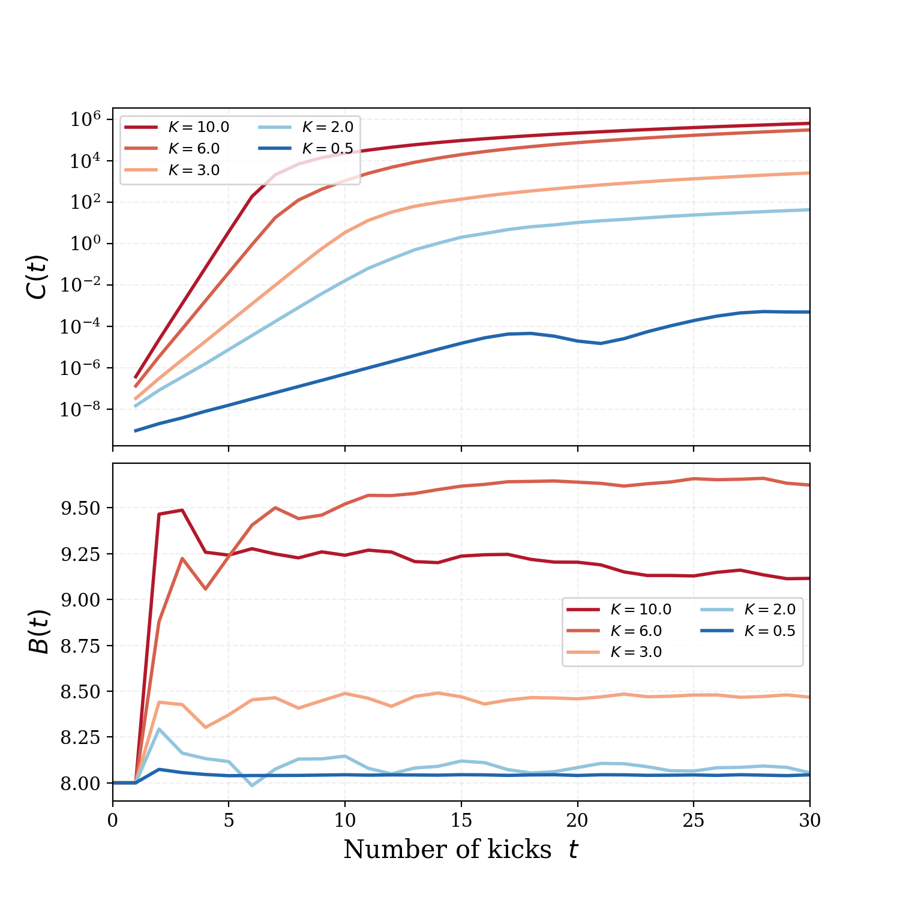
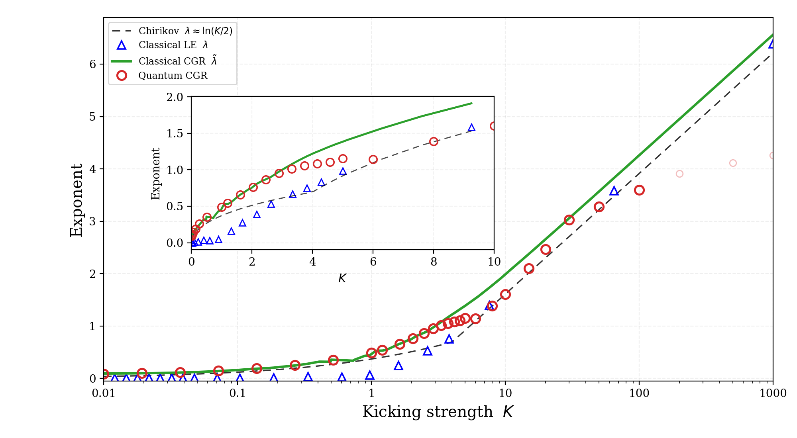
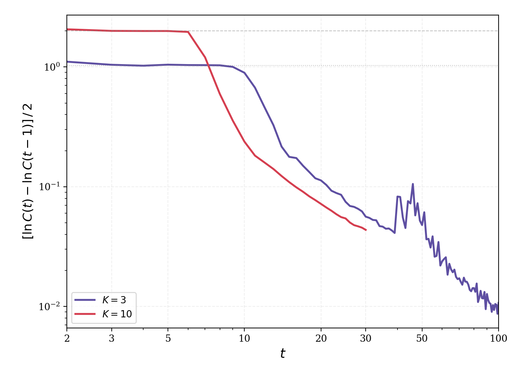
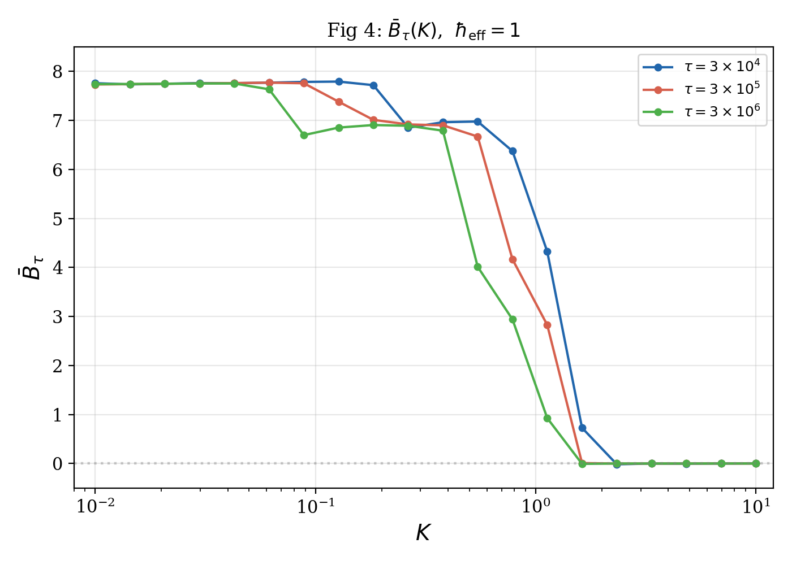
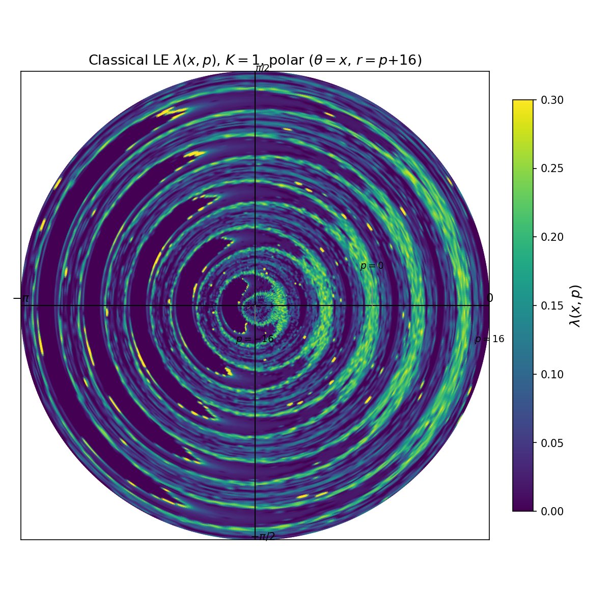

Lyapunov Exponent and Out-of-Time-Ordered Correlator's Growth Rate in a Chaotic System
The paper establishes that the out-of-time-ordered correlator (OTOC) growth rate (CGR) is fundamentally distinct from the classical Lyapunov exponent (LE) in the kicked rotor. This reproduction recovers all five figures with full quantum Floquet-operator evolution and classical tangent-map methods.
1. Classical Kicked Rotor
Induction & Deduction
The kicked rotor is a particle on a ring subjected to periodic delta-function kicks. The dimensionless Hamiltonian is \[ \hat{H} = \frac{\hat{p}^2}{2} + K\cos(\hat{x})\sum_{j=-\infty}^{\infty}\delta(t-j), \] with \(\hat{x}\in[0,2\pi)\). Two parameters control the physics: the kicking strength \(K\) and the effective Planck constant \(\hbar_{\rm eff}\).
Integrating Hamilton's equations over one period yields the Chirikov–Taylor standard map: \[ p_{n+1}=p_n+K\sin x_n,\qquad x_{n+1}=x_n+p_{n+1}\pmod{2\pi}. \] Below \(K_{\rm cr}\approx0.97\), KAM tori confine the motion (regular dynamics); above this threshold, the last invariant torus breaks and global chaos emerges.
Pseudocode
function standard_map_step(x, p, K):
p' = p + K * sin(x)
x' = x + p'
return (x' mod 2π, p' mod 2π)
function iterate(x0, p0, K, n_steps):
xs[0], ps[0] = x0, p0
for i = 1..n_steps:
xs[i], ps[i] = standard_map_step(xs[i-1], ps[i-1], K)
return xs, ps
Python Implementation
@njit
def standard_map_step(x, p, K):
p_new = p + K * np.sin(x)
x_new = x + p_new
return x_new % (2 * np.pi), p_new % (2 * np.pi)
@njit
def iterate_standard_map(x0, p0, K, n_steps):
x, p = x0, p0
xs, ps = np.empty(n_steps + 1), np.empty(n_steps + 1)
xs[0], ps[0] = x, p
for i in range(n_steps):
x, p = standard_map_step(x, p, K)
xs[i + 1] = x
ps[i + 1] = p
return xs, ps
2. Tangent Map & Lyapunov Exponent
Induction & Deduction
The Lyapunov exponent quantifies the exponential divergence of initially close trajectories: \[ \lambda = \bigg\langle\!\!\!\bigg\langle\; \lim_{t\to\infty}\lim_{d(0)\to 0}\frac{1}{t}\ln\frac{d(t)}{d(0)} \bigg\rangle\!\!\!\bigg\rangle, \] where \(d(t)=\sqrt{[\Delta x(t)]^2+[\Delta p(t)]^2}\). The tangent map propagates an infinitesimal separation vector \((\eta,\xi)\): \[ \begin{pmatrix}\eta_{n+1}\\ \xi_{n+1}\end{pmatrix} = \begin{pmatrix}1 & K\cos x_n\\ 1 & 1+K\cos x_n\end{pmatrix} \begin{pmatrix}\eta_n\\ \xi_n\end{pmatrix}. \] To prevent numerical overflow, the tangent vector is periodically renormalized and the log-ratio accumulated.
Pseudocode
function lyapunov_at_point(x0, p0, K, n_steps):
tan = [0.0, 1e-12]; d_norm = 1e-12
lam_sum = 0; count = 0
for step in 1..n_steps:
x, p = standard_map_step(x, p, K)
η, ξ = tan[0], tan[1]
η' = η + K·cos(x)·ξ
ξ' = ξ + η'
tan = [η', ξ']
dist = sqrt(η'² + ξ'²)
if dist > 1e-12 and step > 0:
lam_sum += log(dist / d_norm); count += 1
tan /= dist; d_norm = 1.0
return lam_sum / count
# Global LE = phase-space average over uniform grid
function lyapunov_phase_space(K, n_steps, n_grid):
for each (x0, p0) in n_grid × n_grid on [0,2π)²:
λ_map[p0, x0] = lyapunov_at_point(x0, p0, K, n_steps)
return λ_map
Python Implementation
@njit
def tangent_map_step(tan_vec, K, cos_x):
eta, xi = tan_vec[0], tan_vec[1]
eta_new = eta + K * cos_x * xi
xi_new = xi + eta_new
return np.array([eta_new, xi_new])
@njit
def compute_lyapunov_at_point(x0, p0, K, n_steps):
d0 = 1e-12
tan = np.array([0.0, d0])
d_norm = d0
lam_sum = 0.0; count = 0
x, p = x0, p0
for step in range(n_steps):
x, p = standard_map_step(x, p, K)
tan = tangent_map_step(tan, K, np.cos(x))
new_dist = np.sqrt(tan[0]**2 + tan[1]**2)
if new_dist > 1e-12 and step > 0:
lam_sum += np.log(new_dist / d_norm)
count += 1
tan = tan / new_dist
d_norm = 1.0
return lam_sum / count if count > 0 else 0.0
def compute_lyapunov_phase_space(K, n_steps=500, n_grid=200):
xs_grid = np.linspace(0, 2*np.pi, n_grid)
ps_grid = np.linspace(0, 2*np.pi, n_grid)
lam_map = np.zeros((n_grid, n_grid))
for i, x0 in enumerate(xs_grid):
for j, p0 in enumerate(ps_grid):
lam_map[j, i] = compute_lyapunov_at_point(x0, p0, K, n_steps)
return xs_grid, ps_grid, lam_map
3. Classical CGR — the OTOC Growth Rate
Induction & Deduction
The classical correspondence of the OTOC is \[ C_{\rm cl}(t)=\hbar_{\rm eff}^2\; \bigg\langle\!\!\!\bigg\langle\! \left(\frac{\Delta p(t)}{\Delta x(0)}\right)^{2}\! \bigg\rangle\!\!\!\bigg\rangle \sim e^{2\tilde{\lambda}t}, \] where \(\Delta p(t)\) is obtained from the tangent map with initial condition \(\eta(0)=0,\xi(0)=1\) (a unit perturbation in position). The CGR \(\tilde{\lambda}\) is not the Lyapunov exponent \(\lambda\) because of the different order of operations: \[ \tilde{\lambda} \sim \ln\langle\eta^2\rangle \quad\text{vs.}\quad \lambda \sim \langle\ln d\rangle. \] By Jensen's inequality, \(\tilde{\lambda}>\lambda\) for all non-trivial \(K\). The correct computation must average \(\eta^2(t)\) over trajectories first, then take the log-ratio.
Pseudocode
# CORRECT: average first, then log-ratio
function compute_cgr(K, n_steps, n_traj):
eta2_sum[t] = 0 for t in 0..n_steps
for each trajectory in 1..n_traj:
x, p = random point on [0,2π)²
tan = [0.0, 1.0] # η(0)=0, ξ(0)=1
for step in 1..n_steps:
x, p = standard_map_step(x, p, K)
tan = tangent_map_step(tan, K, cos(x))
eta2_sum[step] += tan[0]²
eta2_avg[t] = eta2_sum[t] / n_traj for all t
cgr = 0.5 * mean(log(eta2_avg[1:] / eta2_avg[:-1]))
return cgr
# WRONG: log first, then average (introduces Jensen error)
# lam_traj = mean(log(eta2[1:]/eta2[:-1])); cgr_wrong = mean(lam_traj)
Python Implementation
@njit
def compute_ccl_and_lam(K, n_steps=300, n_grid=200, heff=2**(-14)):
xs_grid = np.linspace(0, 2*np.pi, n_grid)
ps_grid = np.linspace(0, 2*np.pi, n_grid)
ccl_sum = np.zeros(n_steps + 1)
lam_sum = 0.0; count = 0
lam_grid = np.zeros((n_grid, n_grid))
for i, x0 in enumerate(xs_grid):
for j, p0 in enumerate(ps_grid):
x, p = x0, p0
tan = np.array([0.0, 1.0])
d_norm = 1.0
lam_local = 0.0; lam_count = 0
eta2_t = np.zeros(n_steps + 1)
for step in range(n_steps):
x, p = standard_map_step(x, p, K)
tan = tangent_map_step(tan, K, np.cos(x))
eta2_t[step + 1] = tan[0]**2
new_dist = np.sqrt(tan[0]**2 + tan[1]**2)
if new_dist > 1e-12 and step > 0:
lam_local += np.log(new_dist / d_norm)
lam_count += 1
tan = tan / new_dist
d_norm = 1.0
ccl_sum += eta2_t
if lam_count > 0:
lam_sum += lam_local / lam_count
lam_grid[j, i] = lam_local / lam_count
count += 1
avg_ccl = heff**2 * ccl_sum / count
avg_lam = lam_sum / count
return avg_lam, avg_ccl, lam_grid, xs_grid, ps_grid
4. Chirikov Analytical Formula
Induction & Deduction
Chirikov derived an analytical estimate for the LE of the standard map (Eqs. 5–6): \[ \lambda \approx \frac{1}{2\pi}\int_{-\pi}^{\pi}\ln L(x)\,dx, \] where \[ L(x)=\Bigg|1+\frac{k(x)}{2}+{\rm sgn}[k(x)]\sqrt{k(x)\Big(1+\frac{k(x)}{4}\Big)}\Bigg|,\quad k(x)=K\cos x. \] At large \(K\), \(L(x)\approx|K\cos x|\) and \(\lambda\approx\ln(K/2)\).
Pseudocode
function chirikov_lambda(K):
for each x in linspace(-π, π, 20000):
k = K * cos(x)
disc = k * (1 + k/4)
if disc < 0:
L = 1.0 # |ell| = 1 in oscillatory region
else:
sqrt_term = sqrt(disc)
if k > 0:
ell = 1 + k/2 + sqrt_term
else:
ell = 1 + k/2 - sqrt_term
L = max(|ell|, 1.0)
return trapz(log(L), x) / (2π)
Python Implementation
def chirikov_lam(K):
def L(x_val):
k = K * np.cos(x_val)
disc = k * (1 + k / 4)
if disc < 0:
return 1.0
sqrt_term = np.sqrt(disc)
if k > 0:
ell = 1 + k / 2 + sqrt_term
else:
ell = 1 + k / 2 - sqrt_term
return max(abs(ell), 1.0)
xs = np.linspace(-np.pi, np.pi, 20000)
L_vals = np.array([L(x) for x in xs])
return np.trapz(np.log(L_vals), xs) / (2 * np.pi)
5. Quantum Floquet Operator
Induction & Deduction
Stroboscopic evolution over one kick is governed by the Floquet operator
\[
\hat{F} = e^{-i\hat{p}^2/2\hbar_{\rm eff}}\; e^{-iK\cos(\hat{x})/\hbar_{\rm eff}}.
\]
The kinetic part \(e^{-i\hat{p}^2/2\hbar_{\rm eff}}\) is diagonal in the momentum
basis \(\{|n\rangle\}\) where \(\hat{p}|n\rangle=\hbar_{\rm eff}n|n\rangle\).
The potential part \(e^{-iK\cos(\hat{x})/\hbar_{\rm eff}}\) is diagonal in the
position basis, connected via discrete Fourier transform (DFT) with norm='ortho'.
The momentum basis is truncated to \(n\in[-N,N-1]\) with adaptive
\(N=2^{\lceil\log_2(\alpha\cdot\max(p_{\rm rms},2\sigma)/\hbar_{\rm eff})\rceil}\).
Pseudocode
function build_floquet_ops(N, heff, K):
n = arange(-N, N)
Uk = exp(-i·heff·n²/2) # kinetic, diagonal in momentum
Uk_inv = exp(i·heff·n²/2) # inverse kinetic
function apply_forward(psi):
psi_x = FFT(psi) # to position basis
psi_x *= exp(-i·K·cos(x)/heff) # potential step
psi = IFFT(psi_x) # back to momentum
psi *= Uk # kinetic step
return psi
function apply_backward(psi):
psi *= Uk_inv # inverse kinetic
psi_x = FFT(psi) # to position
psi_x *= exp(i·K·cos(x)/heff) # inverse potential
psi = IFFT(psi_x) # back to momentum
return psi
return apply_forward, apply_backward
Python Implementation
def build_floquet_ops(N, heff, K):
n = np.arange(-N, N)
Uk = np.exp(-1j * heff * n**2 / 2.0)
Uk_inv = np.exp(1j * heff * n**2 / 2.0)
xs = 2.0 * np.pi * np.arange(2 * N) / (2 * N)
V_phase = K / heff
def apply_forward(psi):
psi_x = np.fft.fft(psi, norm='ortho')
psi_x *= np.exp(-1j * V_phase * np.cos(xs))
psi = np.fft.ifft(psi_x, norm='ortho')
psi *= Uk
return psi
def apply_backward(psi):
psi *= Uk_inv
psi_x = np.fft.fft(psi, norm='ortho')
psi_x *= np.exp(1j * V_phase * np.cos(xs))
psi = np.fft.ifft(psi_x, norm='ortho')
return psi
return apply_forward, apply_backward
6. Quantum OTOC & Forward–Backward Evolution
Induction & Deduction
The OTOC is defined as \[ C(t)=-\langle[\hat{p}(t),\hat{p}(0)]^2\rangle, \quad B(t)={\rm Re}\,\langle\hat{p}(t)\hat{p}(0)\rangle, \] where \(\hat{p}(t)=\hat{F}^{-t}\hat{p}\hat{F}^t\).
The computation uses a forward–backward scheme:
- Forward-evolve \(|\psi_0\rangle\) and \(|\phi_0\rangle=\hat{p}|\psi_0\rangle\), storing all intermediate states \(|\psi(t)\rangle,|\phi(t)\rangle\).
- For each \(t\), compute \(|\tilde{b}\rangle=\hat{F}^{-t}\hat{p}|\phi(t)\rangle\) and \(|\tilde{a}\rangle=\hat{F}^{-t}\hat{p}|\psi(t)\rangle\) via incremental backward steps, reusing partial results.
- \(C(t)=\||\tilde{b}\rangle-\hat{p}|\tilde{a}\rangle\|^2\).
The cost is \(\mathcal{O}(T^2)\): \(\sum_{k=1}^{T}2(T-k+1)=T(T+1)\) backward Floquet applications, each requiring 2 FFTs of size \(2N\). Ensemble averaging over \(N_{\rm ens}=2\)–\(5\) realizations with randomly perturbed \(p_0\) reduces statistical fluctuations.
Pseudocode
function compute_otoc_quantum(N, heff, K, n_steps):
fwd, bwd, pop = build_floquet_ops(N, heff, K)
psi0 = gaussian_state(N, heff, p0=0, sigma=4)
phi0 = pop(psi0) # p|psi_0>
# Forward evolution — store all states
psi_t[0] = psi0; phi_t[0] = phi0
for t in 1..n_steps:
psi_t[t] = fwd(psi_t[t-1])
phi_t[t] = fwd(phi_t[t-1])
# B(t) = Re
for t in 0..n_steps:
B[t] = Re(dot(conj(psi_t[t]), pop(phi_t[t])))
# C(t) via backward evolution
for t in 0..n_steps:
b_tilde = pop(phi_t[t])
a_tilde = pop(psi_t[t])
for _ in 0..t-1:
b_tilde = bwd(b_tilde)
a_tilde = bwd(a_tilde)
diff = b_tilde - pop(a_tilde)
C[t] = sum(|diff|^2)
return C, B
Python Implementation
def compute_otoc_quantum(N, heff, K, n_steps, p0=0.0, sigma=4.0):
fwd, bwd, apply_p, _, _ = build_floquet_ops(N, heff, K)
psi0 = gaussian_state(N, heff, p0, sigma)
phi0 = apply_p(psi0)
psi_t = [psi0.copy()]
phi_t = [phi0.copy()]
psi, phi = psi0.copy(), phi0.copy()
for _ in range(n_steps):
psi = fwd(psi); phi = fwd(phi)
psi_t.append(psi.copy())
phi_t.append(phi.copy())
C = np.zeros(n_steps + 1)
B = np.zeros(n_steps + 1)
for t in range(n_steps + 1):
B[t] = np.real(np.dot(np.conj(psi_t[t]),
apply_p(phi_t[t])))
p_phi_t = apply_p(phi_t[t])
b_tilde = p_phi_t.copy()
for _ in range(t):
b_tilde = bwd(b_tilde)
p_psi_t = apply_p(psi_t[t])
a_tilde = p_psi_t.copy()
for _ in range(t):
a_tilde = bwd(a_tilde)
p_a_tilde = apply_p(a_tilde)
diff = b_tilde - p_a_tilde
C[t] = np.sum(np.abs(diff)**2)
return C, B
7. Ehrenfest-Time Singularity & Logarithmic Derivative
Induction & Deduction
To isolate the CGR and eliminate the \(\hbar_{\rm eff}^2\) prefactor, define the logarithmic derivative: \[ d(t) \equiv \frac{\ln C(t) - \ln C(t-1)}{2}. \] If \(C(t)=Ae^{2\tilde{\lambda}t}\), then \(d(t)=\tilde{\lambda}\) (constant). On a log-log plot, \(d(t)\) reveals two regimes:
- \(t < t_{\rm E}\): flat plateau at \(d(t)\approx\tilde{\lambda}\) — exponential OTOC growth.
- \(t > t_{\rm E}\): power-law decay — quantum interference becomes dominant. \(t_{\rm E}\sim|\ln\hbar_{\rm eff}|/\ln(K/2)\).
Pseudocode
function logarithmic_derivative(C):
d[t] = (ln(max(C[t], 1e-300)) - ln(max(C[t-1], 1e-300))) / 2
for t in 2..len(C)-1
plot t vs d[t] on log-log scale
Python Implementation
d_log = np.array([(np.log(max(C[t], 1e-300)) -
np.log(max(C[t-1], 1e-300))) / 2
for t in range(2, len(C))])
import matplotlib.pyplot as plt
fig, ax = plt.subplots()
ax.loglog(np.arange(2, len(C)), d_log)
ax.set_xlabel('t'); ax.set_ylabel('d(t)')
8. Long-Time Averaged Correlator (Fig. 4)
Induction & Deduction
At \(\hbar_{\rm eff}=1\), the kicked rotor is dynamically localized — Anderson localization in momentum space. The long-time average of the two-point correlator, \[ \bar{B}_{\tau}(K) = \frac{1}{\tau}\sum_{t=0}^{\tau}{\rm Re}\,\langle\hat{p}(t)\hat{p}(0)\rangle, \] exhibits a sharp step at \(K_{\rm cr}\approx0.97\), tracing the classical regular-to-chaotic transition even deep in the quantum regime.
At \(\hbar_{\rm eff}=1\), the basis is tiny (\(N=16\), 32 states), making this a forward-only computation with cost \(\mathcal{O}(\tau N\log N)=\mathcal{O}(\tau)\). For \(\tau=3\times10^6\), this completes in \(\sim1\) s per \(K\) value.
Pseudocode
function compute_btau(K, tau):
N = 16; psi = gaussian(N, heff=1, p0=0, sigma=4)
phi = pop(psi)
B_sum = 0
for t in 0..tau:
B_sum += Re(dot(conj(psi), pop(phi)))
psi = fwd(psi) # forward Floquet step
phi = fwd(phi)
return B_sum / (tau + 1)
Python Implementation
def compute_btau(args):
K, tau = args
M = 2 * N; nv = np.arange(-N, N, dtype=np.float64)
Uk = np.exp(-1j * HEFF * nv**2 / 2.0)
xs = 2.0 * np.pi * np.arange(M) / M
V_phase = K / HEFF
psi = np.exp(-(HEFF * nv)**2 / (2 * SIGMA**2))
psi /= np.sqrt(np.sum(np.abs(psi)**2))
phi = (HEFF * nv) * psi.copy()
B_sum = 0.0
for t in range(tau + 1):
B_sum += np.real(np.vdot(psi, (HEFF * nv) * phi))
px = np.fft.fft(psi, norm='ortho')
px *= np.exp(-1j * V_phase * np.cos(xs))
psi = np.fft.ifft(px, norm='ortho') * Uk
px = np.fft.fft(phi, norm='ortho')
px *= np.exp(-1j * V_phase * np.cos(xs))
phi = np.fft.ifft(px, norm='ortho') * Uk
return K, tau, B_sum / (tau + 1)
9. Figures





| Figure | Method | Max \(N\) | Kicks | Wall Time | Memory |
|---|---|---|---|---|---|
| Fig. 1 | Q Fwd–Bwd | \(2^{21}\) | 30 | ~15 min | ~12 GB |
| Fig. 2 (cl.) | Tangent-map MC | — | 400 | ~30 s | <1 GB |
| Fig. 2 (q.) | Q Fwd–Bwd | \(2^{26}\) | 5–12 | ~3 min | ~64 GB |
| Fig. 3 | Q Fwd–Bwd | \(2^{21}\) | 60 | ~30 min | ~4 GB |
| Fig. 4 | Q Fwd-only | 32 | \(3\times10^6\) | ~3 min | <1 MB |
| Fig. 5 | Classical LE grid | — | 400 | ~3 min | <1 GB |
Reproduced on h100 (2×Xeon Platinum 8558, 192 cores, 2 TB RAM).
Project File Organization
rozenbaum2017/ │ ├── kicked_rotor.py ◄── core engine │ standard map · tangent map · Floquet ops │ OTOC · Chirikov formula · Gaussian state │ imported by all run & plot scripts │ ├── run_fig1.py ──► fig1_data.npz ──► plot_fig1.py ──► fig1.png │ 30 kicks, 5 K values OTOC C(t) & B(t) semilog + linear │ ├── run_fig2.py ──► fig2_data.npz ──► plot_fig2.py ──► fig2.png │ 80 K, grid + MC LE(λ) & CGR(λ̃) 4 curves + inset │ run_fig2_quantum.py + Chirikov quantum & classical │ run_fig2_largeK.py │ ├── run_fig3.py ──► fig3_data.npz ──► plot_fig3.py ──► fig3.png │ 100 kicks, K=3,4,7,10 log C(t)/2t log-log d(t) │ + reuses fig1_data for K=3,10 plateau → power law │ ├── run_fig4.py ──► fig4_data.npz ──► plot_fig4.py ──► fig4.png │ ħ=1, N=16, τ≤3×10⁶ B̄_τ(K) for 3 τ step at K_cr ≈ 0.97 │ ├── run_fig5.py ──► fig5_data.npz ──► plot_fig5.py ──► fig5.png │ K=1, 200×200 grid LE λ(x,p) polar KAM + chaotic sea │
Reproduced on h100 (2×Xeon Platinum 8558, 192 cores, 2 TB RAM).
Data files (*.npz) are not tracked — regenerate with run_fig*.py.